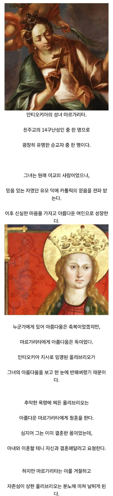
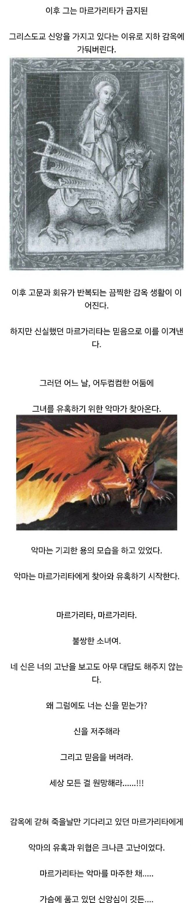
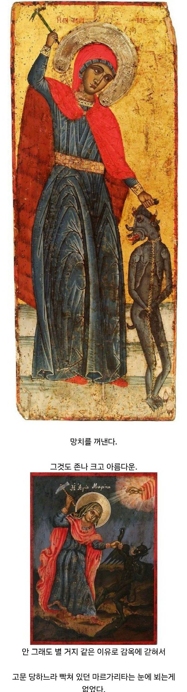
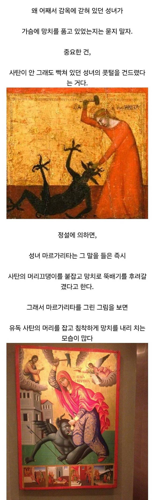
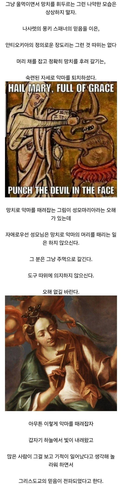
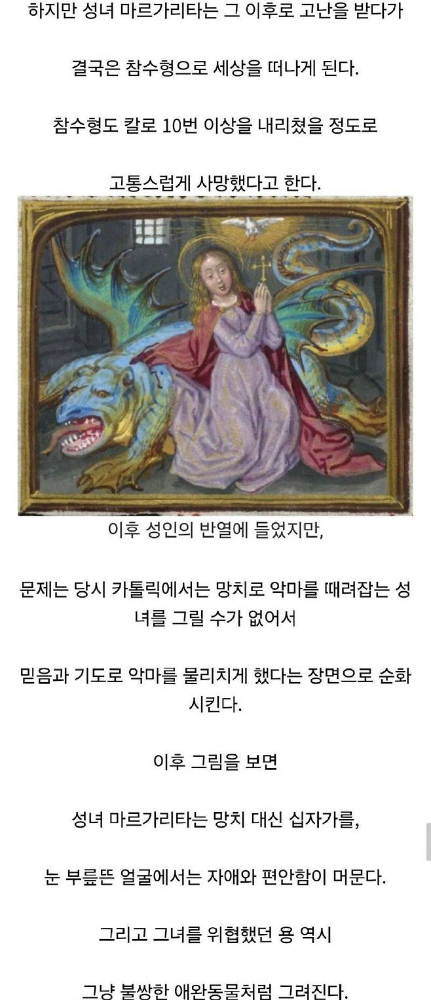
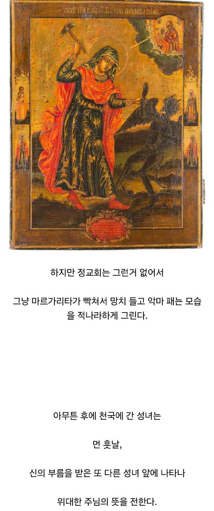
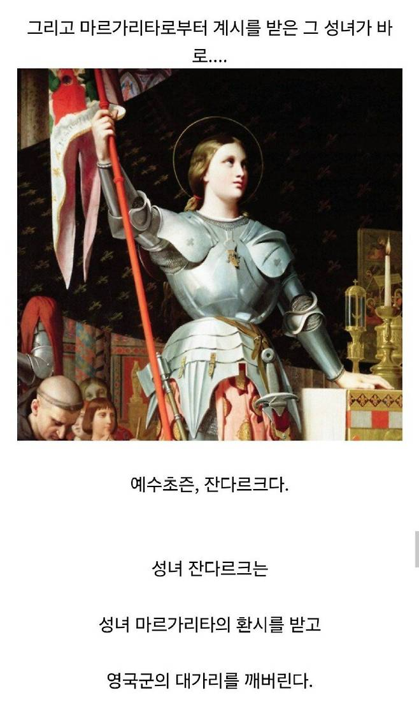

신성(물리)








신성(물리)
천년뒤의 인간이 보기에도 천년은 이를 그 경녀를 보라는것이냐
상식적으로 이해가 안 되는 물리력과 기적을 어떻게 구별함? 그냥 기적 맞음 ㅋㅋ
내 망치는 마음속 믿음과 신앙이다
신의 초즌을 받으면 죽을때 괴롭게 죽는구나
성녀님의 망치
너의 신념(대가리)이 나의 신앙(장도리)을 막을 수 있을까??
아아 그래서 디아블로2 장도리가 휙휙 주변을 도는거구나
아하! 역시 역사를 알아야 문화가 보이는구나!
1대 햄딘 ㄷㄷ
배틀크루 ㄷㄷ
소금물(성수)에 절여둔 둔기(아프다)면 악마 할아버지가와도 신의 성스러움에 오줌을 지리고 말 것
녹난망치론 일단지금은안뒤져도 파상풍으로 죽인당께요
왜 올리브리오는 갑자기 하차함? ㅋㅋㅋ
걍 올리브리오 저새끼 때려죽였는데 워낙 악독한 새끼라
모든사람이 입모아서 실드쳐준거 아님? ㅋㅋㅋㅋ
이건 사람 죽인게아니고 악마를 죽인거다!
마르가리타가 사탄을 죽였다!
마르가리타는 성녀다!
참수형당했다는거보면 가능성 있는듯 ㅋㅋ
올리브리오가 악마로 보일법하지
올리브리오 몸에 달려있는걸 용이라 비유한걸지도?
망치로 그걸..
헉
오 그럴사하다. 망치는 올리브오가 들고있던걸 뺏은거면 갑자기 망치를 꺼낼만한데
성모님은 완판치시라 주먹으로도 대가릴깨시는구나ㄷㄷ
물리적 퇴마 개웃기네 ㅋㅋㅋㅋㅋㅋㅋㅋㅋ
'광신' '열의' '깊은고뇌'
성모 마리아는 창세기의 알레고리로 뱀을 밟고 있는 묘사가 많은 편
마르게리따
부릅
아아 마르그리트
너는 눈으로 마시는 내 샴페인 내 와인 내 데킬라 마르가리타
나 같음 솔까 감옥에서 고문받는 동안 도와주지도 않고,
악마 만나도 안 구해줘서 자력(망치)으로 구제하고 참수까지 당하는데 이 정도면 해머딘 각성해서 천상에 해머 난사한다
성기사 무기를 해머로 하는게 근본고증이었네
대몬 머가리 뚝스딱스 ㅋㅋㅋㅋ
둔기가 근본이었구나
마르가리타의 망치 (신성)
성녀 그만보고 경녀 봐봐